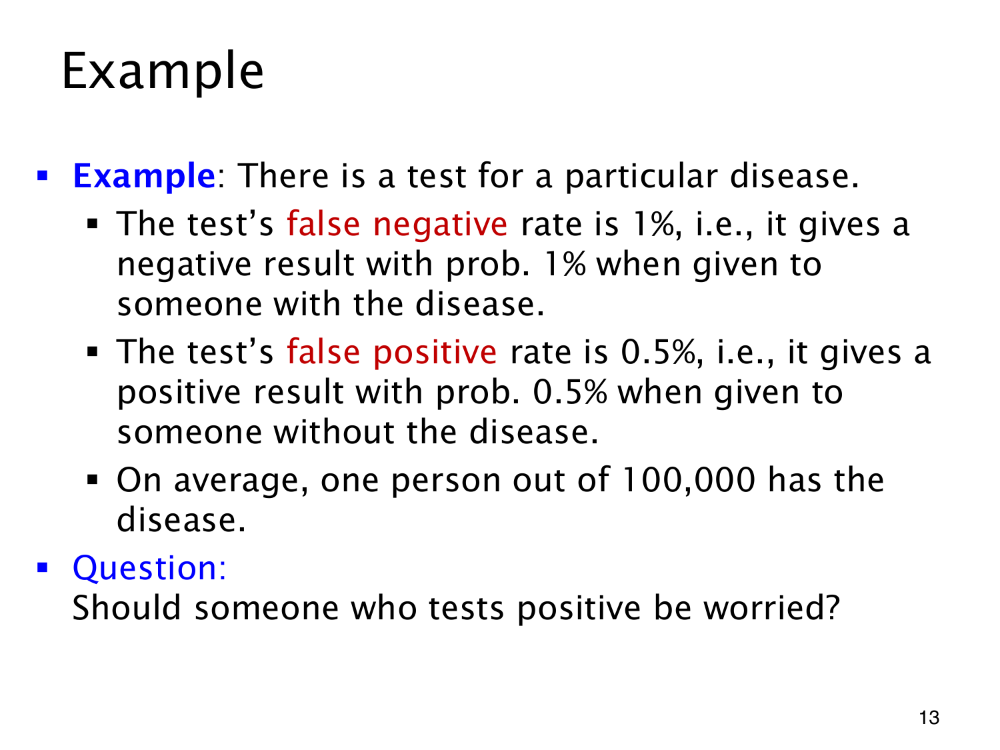

L1.10 · 第 13 页讲解原文
查看这一页课件

稀有疾病模型中的阳性
课件用一个抽象检测模型问“阳性之后，患病的后验概率是多少”。患病先验为 1/100000，患病者有 1% 的概率测成阴性，未患病者有 0.5% 的概率测成阳性。
令 D 为患病，+、− 为检测结果，则
p(−∣D)=0.01,p(+∣D)=0.99,p(+∣D)=0.005.
假阴性率（false negative rate）的分母是患病者，假阳性率（false positive rate）的分母是未患病者，两者不能直接相加充当总错误率。Bayes 计算要把各自的先验比例乘进去：
p(D∣+)=0.99×0.00001+0.005×0.999990.99×0.00001≈0.001976,
即约 0.198%。
以 1000000 个符合模型的人作频数解释，约 10 人患病，产生约 9.9 个真阳性；999990 人未患病，产生约 4999.95 个假阳性。因此阳性结果中，大部分来自未患病者。这里的数字只用于课件的概率推理；“检测准确”这个描述本身没有给出先验与两类检测概率，无法单独确定后验。